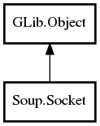

Socket
Object Hierarchy:

Description:
public class Socket :
Object
Namespace: Soup
Package: libsoup-2.4
Content:
Properties:
Creation methods:
Methods:
- public void connect_async (Cancellable? cancellable, SocketCallback callback)
- public uint connect_sync (Cancellable? cancellable = null)
- public void disconnect ()
- public int get_fd ()
- public weak Address get_local_address ()
- public weak Address get_remote_address ()
- public bool is_connected ()
- public bool is_ssl ()
- public bool listen ()
- public SocketIOStatus read (uint8[] buffer, out size_t nread, Cancellable? cancellable = null) throws Error
- public SocketIOStatus read_until (uint8[] buffer, void* boundary, size_t boundary_len, out size_t nread, bool got_boundary, Cancellable? cancellable = null) throws Error
- public bool start_proxy_ssl (string ssl_host, Cancellable? cancellable = null)
- public bool start_ssl (Cancellable? cancellable = null)
- public SocketIOStatus write (uint8[] buffer, out size_t nwrote, Cancellable? cancellable = null) throws Error
Signals: